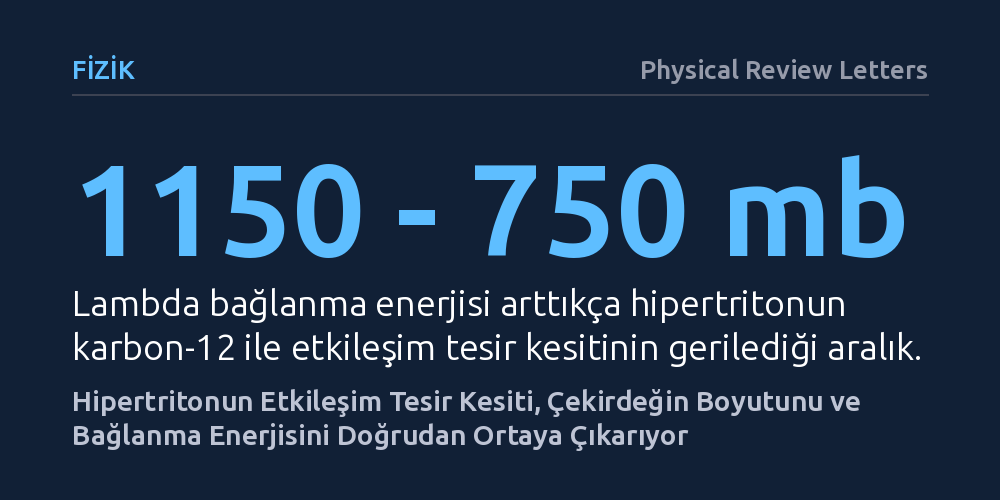

FIZIK · Physical Review Letters · 2026-10-19
Araştırmacılar, hipertriton gibi egzotik hiperçekirdeklerin uzaysal yapısını ve bağlanma enerjisini çarpışma deneyleriyle hassas biçimde belirlemenin kuramsal yolunu araştırdı. Geliştirilen model, etkileşim tesir kesitinin ölçülmesiyle hiperçekirdeğin madde yarıçapının ve hiperon bağlanma enerjisinin yaklaşık yüzde 5 belirsizlikle doğrudan hesaplanabileceğini gösterdi.
Egzotik hiperçekirdeklerin iç yapısı ve boyutları artık sadece dolaylı tahminlerle değil, yakında yapılacak laboratuvar çarpışma ölçümleriyle doğrudan ve yüksek hassasiyetle aydınlatılabilecek.

Çevremizde gördüğümüz olağan atom çekirdekleri yalnızca proton ve nötronlardan oluşur. Ancak nükleer fizikçiler, bu temel yapıya "garip" kuark içeren hiperon adlı yabancı parçacıkların eklendiği kararsız hiperçekirdekleri laboratuvar ortamında üretebilmektedir. Bu sistemlerin bilinen en hafif ve yalın örneği olan hipertriton; bir proton, bir nötron ve bir Lambda hiperonunun birbirine son derece zayıf kuvvetlerle bağlandığı özel bir çekirdektir. Bu egzotik yapının boyutu ve iç bağlarının gücü, evrendeki en yoğun gök cisimleri olan nötron yıldızlarının iç yapısını modellemek için vazgeçilmez bir referans kabul edilir.
Ne var ki hipertritonu laboratuvarda doğrudan incelemek muazzam bir deneysel zorluk barındırır. Çekirdeğin saniyenin milyarda birinden çok daha kısa süren ömrü ve Lambda parçacığının çekirdeğe ne kadar sıkı bağlandığına (bağlanma enerjisi) dair mevcut ölçümler arasındaki tutarsızlıklar, fizikçileri uzun süredir bir belirsizlik içinde bırakmıştır. Lambda parçacığının çekirdeğin merkezinde mi yer aldığı, yoksa çekirdek etrafında geniş bir bulut gibi mi dolandığı sorusu bugüne dek doğrudan yanıtlanamamıştı.
Fizikçiler bu açmazı aşmak için hızlandırıcılarda gerçekleştirilmesi planlanan çarpışma deneylerini temel alan yeni bir kuramsal çerçeve kurdu. Çalışmada, üç cisimli mikroskobik dalga fonksiyonları kullanılarak hipertritonun iç kuantum yapısı modellendi. Ardından yüksek enerjili çekirdek çarpışmalarını tanımlayan sonlu menzilli ve kanalları eşleştirilmiş Glauber saçılma kuramı ile bu yapının karbon-12 hedefiyle nasıl etkileşime gireceği hesaplandı.
Araştırma ekibi, nükleon başına 1,5 GeV enerjideki çarpışmaları simüle ederek saçılma olasılığını (etkileşim tesir kesitini) ayrıntılı biçimde inceledi. Ardından Bayesçi istatistiksel tersine çevirme yaklaşımını devreye sokarak, deneyde ölçülecek bir tesir kesiti değerinden hiperçekirdeğin madde yarıçapına ve oradan da doğrudan Lambda bağlanma enerjisine nasıl geri dönüleceğini haritalandırdı.
Hesaplamalar, etkileşim tesir kesitinin hiperon bağlanma enerjisine olağanüstü derecede duyarlı olduğunu ortaya koydu. Lambda parçacığının bağlanma enerjisi 0,1 megaelektronvolttan (MeV) 0,5 MeV değerine yükseldikçe, hipertritonun karbon çekirdeğiyle etkileşime girme tesir kesiti yaklaşık 1150 milibarndan 750 milibarna kadar gerilemektedir. Bağ kuvvetlendikçe çekirdek büzülmekte, bağ zayıfladıkça çekirdeğin boyutu genişlemekte ve hedefle çarpışma olasılığı belirgin biçimde artmaktadır.
Daha da önemlisi, kuramsal tepkime modelinden kaynaklanan belirsizliklerin yalnızca yüzde 5 civarında kaldığı gösterildi. Makalede ifade edildiği üzere, "Bir ölçüm, tesir kesitinden madde yarıçapına ve oradan bağlanma enerjisine doğrudan bir tersine çevrim sağlayarak her iki büyüklüğü de sınırlar." Bu hassasiyet, gelecekteki hızlandırıcı deneylerinde elde edilecek tek bir tesir kesiti verisinin, onlarca yıldır tartışılan yapısal özellikleri kesin olarak belirleyebileceğini kanıtlamaktadır.
Elde edilen bu metodoloji, nükleer fizikte deneysel ölçüm ile uzaysal çekirdek yapısı arasında eksik olan nicel köprüyü kurmaktadır. Şimdiye kadar sadece kuramsal varsayımlarla kestirilen hiperçekirdek yarıçapları, artık GSI/FAIR gibi ileri tesislerde planlanan yeni nesil çarpışma deneyleriyle doğrudan ölçülebilir bir fiziksel niceliğe dönüşmüştür.
Bu yaklaşımın başarısı sadece hipertriton ile de sınırlı değildir; gevşek bağlı diğer egzotik hiperçekirdeklere de kolaylıkla uyarlanabilmektedir. Hiperon-nükleon etkileşimlerinin bu yolla aydınlatılması, devasa kütleli nötron yıldızlarının merkezindeki aşırı yoğun madde durumunu açıklayan durum denklemlerinin çok daha sağlam temellere oturmasını sağlayacaktır.